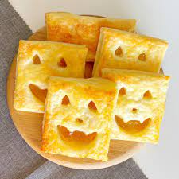

Spellbinding Charmed Pastries

Description: pastries asf
Ingredients:
- 1 batch of crescent moon-shaped pastry dough
- 1 cup of mystical blueberry compote
- 1 teaspoon of powdered star anise
- Cosmic sugar glaze for decoration
- Essence of enchanted dreams
Instructions:
- Roll out the crescent moon-shaped pastry dough on a surface sprinkled with powdered star anise.
- Fill each pastry with a spoonful of mystical blueberry compote, leaving space to seal the edges.
- Fold the pastry over to form crescent shapes, sealing the edges with a touch of enchanted water.
- Bake in a preheated oven until the pastries turn a celestial golden hue.
- Once cooled, drizzle cosmic sugar glaze over the pastries and sprinkle with essence of enchanted dreams for an extra touch of enchantment.